Manual de Uso - FirmaDigitalISSET
Este manual te guiará paso a paso para configurar y usar Autofirma para firmar
documentos PDF con tu e.Firma del SAT.
Requisitos Previos
- Certificado e.Firma del SAT (
.cer)
- Clave privada (
.key)
- Contraseña de la e.Firma
- Cuenta de dominio (el certificado se guardará en los certificados del usuario Windows)
- Firma escaneada (
.jpeg, opcional)
Configuración Inicial
Paso 1: Convertir e.Firma SAT a PFX
- Abre autofirma.exe
- En la barra superior haz click en Herramientas
- Selecciona Convertir e.Firma SAT a PFX
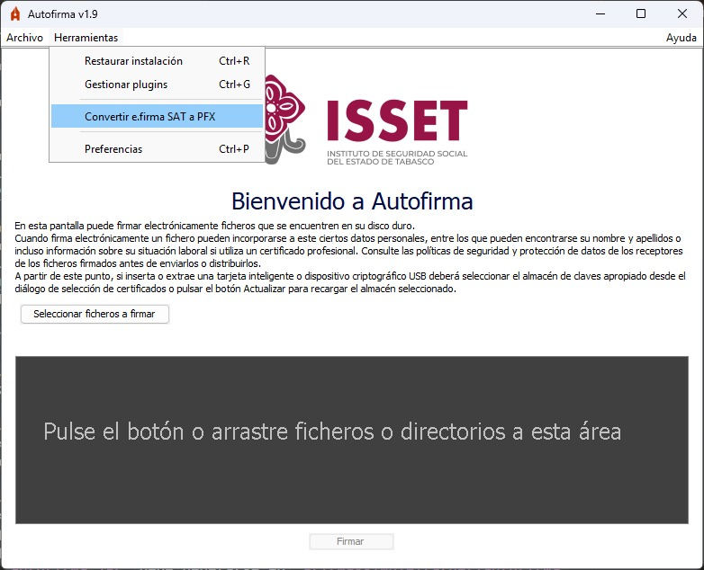
Paso 2: Seleccionar Archivos de e.Firma
Archivo de Certificado (.cer)
- Haz click en Examinar
- Selecciona tu archivo
.cer
Archivo de Clave Privada (.key)
- Haz click en Examinar
- Selecciona tu archivo
.key
Contraseña
- Ingresa la contraseña de tu e.Firma
- Haz click en Convertir e Instalar
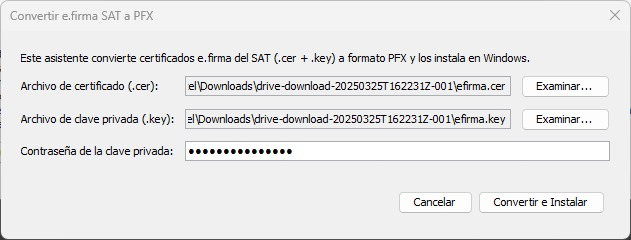
Asistente para Importar Certificados
Paso 3: Ubicación del Almacén
Después de hacer click en "Convertir e Instalar", se abrirá automáticamente un cuadro de diálogo Conversión exitosa
no cierre, diríjase a la barra de tareas de click en el icono del "Asistente para importar certificados" y sigue estos pasos:
- Selecciona Usuario actual
- Haz click en Siguiente
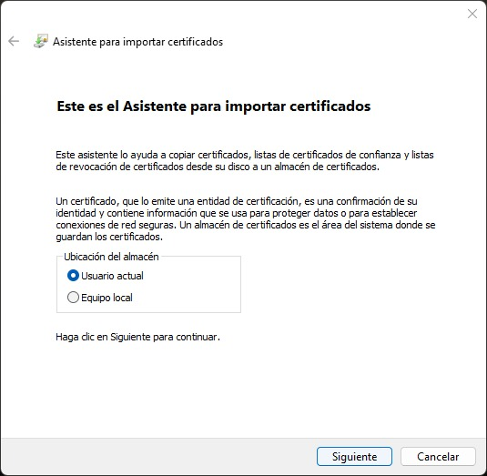
Paso 4: Archivo a Importar
- En la sección Archivo a importar , no necesitas cambiar nada, el archivo ya estará seleccionado automáticamente
- Haz click en Siguiente
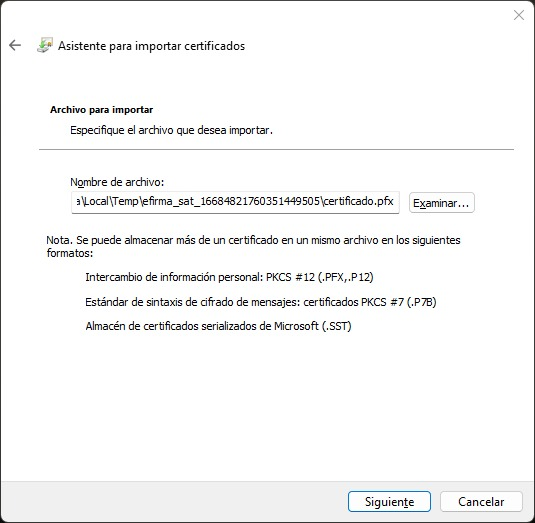
Paso 5: Protección de Clave Privada
- Ingresa nuevamente la contraseña
- Marca Incluir todas las propiedades extendidas
- Haz click en Siguiente
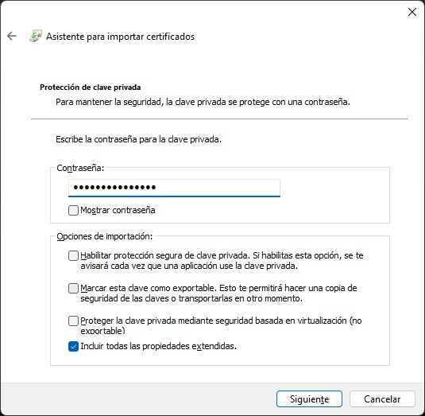
Paso 6: Almacén de Certificados
- En la sección Almacén de certificados, no necesitas cambiar nada
- Haz click en Siguiente
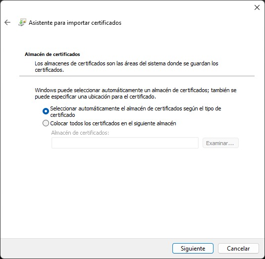
Paso 7: Finalizar
- Revisa la información mostrada
- Haz click en Finalizarpara completar el proceso de importación.
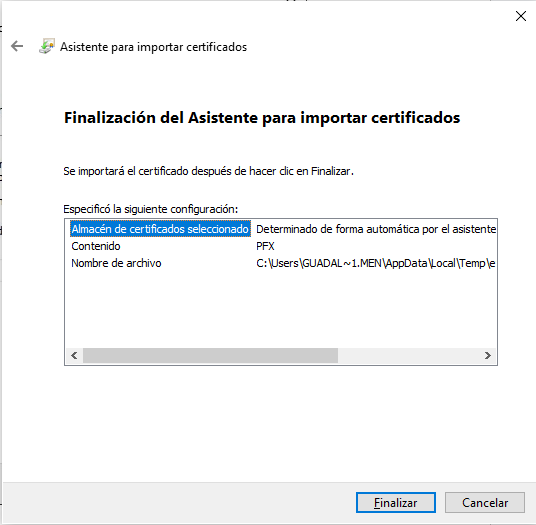
Firmar Documentos PDF
Paso 1: Abrir Archivos
Opción A: Botón
- Haz click en Seleccionar ficheros a firmar
- Selecciona el PDF
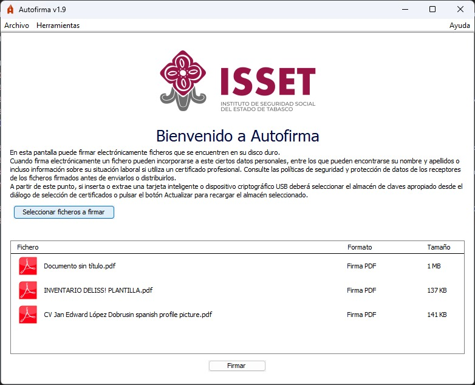
Opción B: Arrastrar y Soltar
- Arrastra uno o varios PDFs a la ventana
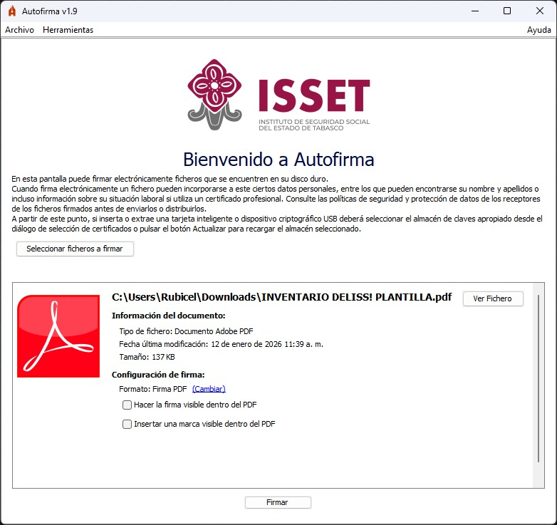
Paso 2: Firma Visible (Opcional)
- Marca Hacer la firma visible dentro del PDF
- Dibuja el área de la firma
- Selecciona la imagen de tu firma
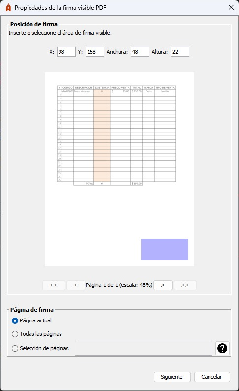
Paso 3: Guardar Documento Firmado
- Selecciona la ubicación
- Haz click en Guardar
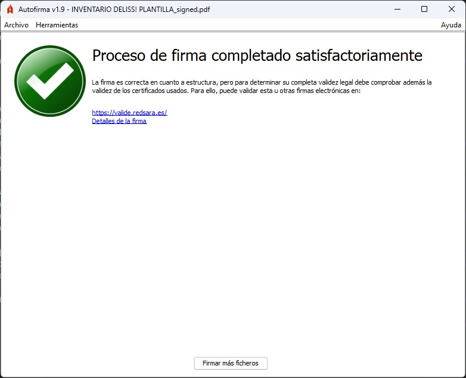
Consejos Útiles
- Elimina los archivos
.pfx después de importarlos
- Puedes firmar varios PDFs al mismo tiempo
- La firma visible es opcional
- Verifica siempre el certificado seleccionado
Licencia
Autofirma se distribuye bajo licencias GPLv2 y EUPL v1.1.